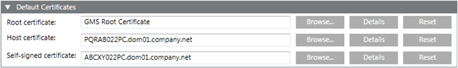

Set the Default Certificates
Only the root, host, and self-signed certificates that you have imported in the Windows Certificate store are listed in the Select Certificate dialog box when setting them as default.
- In the SMC tree, select Certificate.
- The Certificates tab with the Default Certificates expander displays.
- Click Edit
 .
. - In the Default Certificates expander, do the following:
- Click Browse to open the Select Certificate dialog box.
a. Select a root certificate from the Local machine certificates store location of the Trusted Root Certification Authorities tab.
b. Click OK to close the Select Certificate dialog box. It is recommended to verify the certificate details, by clicking Details. - Click Browse to open the Select Certificate dialog box.
a. Select a host certificate from the Local machine certificates store location of the Personal tab.
b. Click OK to close the Select Certificate dialog box. It is recommended to verify the certificate details, by clicking Details. - Click Browse to open the Select Certificate dialog box.
a. Select a self-signed certificate from the Local machine certificates store location of the Personal tab.
b. Click OK to close the Select Certificate dialog box. It is recommended to verify the certificate details, by clicking Details. - Click Save
 .
.
NOTE 1: Only certificates with RSA signature algorithm are supported. CNG certificates are not supported.
NOTE 2: It is recommended to create a new certificate if the machine name is changed, each machine name must have a unique certificate, you can import and set the certificates as default. - Click OK and select another certificate.
- The default root, host and self-signed certificates are set.
You may verify the default set certificates in various SMC workflows:
The default root and host certificate display, during project modification on the server and during project creation and modification on the client/FEP, if the client or server communication mode is set asSecured.
The default host certificate displays, during project creation/editing, when the web communication is set asSecured.
The default self-signed certificate displays, during web site and web application creation.
